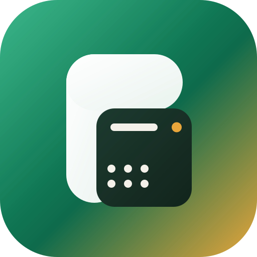

Je construis des logiciels complets et utilisables, pour des gens qui n'ont pas le temps d'apprendre un logiciel. Le dernier en date : une caisse pour les commerces et restaurants du Gabon, de la base de données jusqu'au déploiement, seul.

Une caisse tactile pour les boutiques, restaurants et maquis du Gabon, qui tourne sur le téléphone ou l'ordinateur que le commerçant a déjà. Elle continue d'encaisser quand la connexion coupe, et les ventes remontent seules au retour du réseau.
Stock et alertes, fournisseurs, personnel, fidélité, rapports PDF et Excel, écran de cuisine en temps réel, paiement Mobile Money, offres d'abonnement avec essai gratuit. Plus le site, les guides, les vidéos de formation et l'installation sur place.
Un projet, une question, une collaboration : écrivez-moi à djabirabdoulraouf72@gmail.com ou sur LinkedIn. Je réponds en français, depuis Libreville.